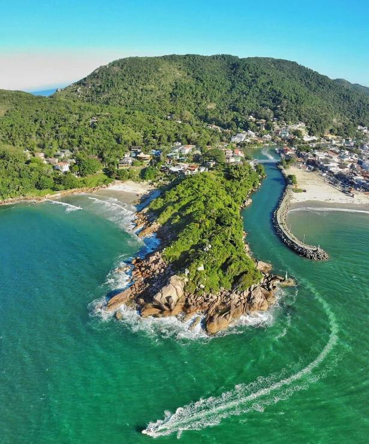

Venha para Santa Cantarina



Somos uma empresa que tem como objetivo divulgar os pontos turísticos do estado de Santa Catarina. Nossa missão é fazer com que as pessoas conheçam as belezas naturais e culturais do estado, e consequentemente, aumentar o número de turistas no estado.
Para isso, contamos com uma equipe de profissionais altamente qualificados, que trabalham para oferecer a melhor experiência possível para os nossos clientes.
Além disso, contamos com uma equipe de desenvolvedores que trabalham para oferecer a melhor experiência possível para os nossos clientes.